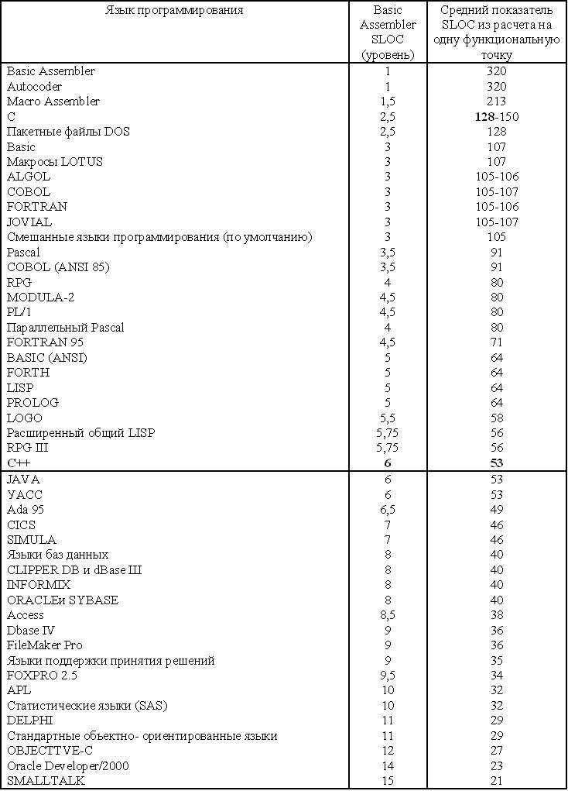

Оценка размера ПО в процессе разработки проекта
Оценка показателя LOC с помощью экспертных заключений и восходящего суммирования
Пусть структура WBS содержит несколько уровней декомпозиции в иерархии продукта/проекта. Требования к иерархии продуктов WBS могут быть разбиты на фактические компоненты программных систем.
Максимально детализированная структура WBS может принести пользу на стадии точных измерений, за которой следует стадия точных оценок.
Как только структура WBS будет разбита с учетом выделения самых нижних уровней, может быть создан "статистический" показатель размера.
При этом используются процессы измерения и суммирования. Величина размера каждого компонента может быть получена путем опроса экспертов, разрабатывавших подобные системы, либо путем использования данных опроса потенциальных разработчиков подобных систем. В результате становится возможной оценка размеров каждого блока на нижних уровнях структуры WBS.
После сложения результатов измерений полученный итог будет называться оценкой размера "снизу-вверх". Улучшенная оценка может быть получена в том случае, если каждый оценщик произведет оптимистическую, пессимистическую и реалистическую оценку размеров. Затем формируется бета-распределение путем умножения реалистической оценки размера на 4, добавления оптимистической и пессимистической оценок с последующим делением результата на 6. Подобное взвешенное среднее значение является удобным в условиях естественной неопределенности процесса оценивания.
Например, если данный оконный объект отображается в структуре WBS для системы, поддерживающий код, который требуется для реализации процесса редактирования в данном окне, может занимать от 200 до 400 строк кода, причем, скорее всего эта цифра окажется более близкой к 250. Учитывая предложенные оценщиком пессимистические и оптимистические сценарии, можно получить следующую итоговую оценку:
ПО - Пессимистическая оценка размеров,
ОО - Оптимистическая оценка размеров,
РО - Реалистическая оценка размеров,
(ПО+ОО+(РО*4))/6= LOC
(200 + 400 +(250*4))/6 = 266,67=266 LOC
Количество тысяч строк исходного кода (KSLOC) является производным от общей метрики, вводимой при оценках производительности.
Обычно производительность выражается в KSLOC/SM либо KLOC/SM (где SM - staff-month (человеко-часы)).
Подсчет строк существующего кода вручную является достаточно утомительным и длительным занятием. В силу этого многие организации приобретают либо разрабатывают автоматизированные LOC-счетчики.
Подсчет вручную:
- Каждая учитываемая "строка исходного кода" должна содержать лишь один оператор (если в одной строке содержатся два выполняемых оператора, разделяемых точкой с запятой, то будут учитываться две строки; если же один выполняемый оператор разбит на две "физические" строки, он будет учитываться как один оператор). В языках программирования допускаются все опции кодирования, но обычно проще определять в строке один выполняемый оператор, обрабатываемый компилятором либо интерпретатором.
- Необходимол учитывать все имеющиеся выполняемые операторы- конечный пользователь может не иметь возможности непосредственно использовать каждый оператор, но все операторы должны поддерживаться данным продуктом (в том числе и утилитами).
- Определение данных учитывается лишь один раз.
- Не учитываются строки, содержащие комментарии.
- Не учитывается отладочный код либо любой другой временный код (пробное ПО, средства тестирования, инструменты разработки и прототипирования, а также другие подобные средства).
- Необходимо учитывать каждую инициализацию, вызов либо включение (иногда называемое директивой компилятора) макроса в качестве части исходного кода, в котором осуществляется то либо иное действие (не учитывайте повторно используемые операторы исходного кода).
- Трансляция количество строк исходного кода в эквивалентные строки языка ассемблера, даст вам возможность одновременно выполнять сравнительный анализ для нескольких проектов.
Первый и второй столбцы таблицы рисунка. 16.2 представляют метод трансляции SLOC, применяемый в различных языках по отношению к среднему количеству строк SLOC в базовом языке ассемблера. (Обратите внимание, что SLOC и LOC являются взаимозаменяемыми.) Большинство менеджеров проектов предпочитают выполнять трансляцию с языков программирования на базовый язык ассемблера по той простой причине, что в этом случае операции сравнения во многих проектов могут производиться на идентичной основе. Эти данные могут быть полезными также в случае трансляции проекта с обычного языка программирования на язык преобразования.

Рисунок 16.2 - Показатели SLOC при преобразовании кода с языка программирования на язык Basic Assembler SLOC из расчета на одну функциональную точку
Например, предположим, что операционная система, написанная на языке С и насчитьшающая 50 000 строк LOC, будет преобразована в C++. Руководствуйтесь сведениями из табл. 10.1, где базовый показатель SLOC языка С относительно языка ассемблера равен 2.5. Поэтому операционная система, содержащая 50000 строк SLOC, написанных на С, будет эквивалентной 125000 строкам в случае использования языка ассемблера (50,000 х 2.5). Если же 125000 строк операционной системы на языке ассемблера были переписаны с учетом использования языка C++, получим 125000/6, или 20833 LOC или 20,833 SLOC.
Преимущества при использовании LOC в качестве единиц измерения
- эти единицы измерения широко распространены и могут легко адаптироваться;
- позволяют выполнять сопоставление методов измерения размеров и производительности в различных группах разработчиков;
- непосредственно связаны с конечным продуктом;
- единицы LOC легко оцениваются еще до завершения проекта;
- оценка размеров ПО производится на основе точки зрения разработчика - физическая оценка созданного продукта (количество написанных строк кода);
- действия по непрерывному улучшению базируются на оценочной технике - спрогнозированный размер может быть легко сопоставлен с реальным размером в ходе осуществления постпроектного анализа. (Насколько точной была оценка? Что означает определенный процент? Что может быть изучено в рамках оценки размера следующего проекта?).
Недостатки, связанные с применением метода LOC
- единицы измерения LOC затруднительны в применении при оценке размера ПО на ранних стадиях жизненного цикла разработки;
- исходные инструкции могут различаться в зависимости от типов языков программирования, методов проектирования, стиля и способностей программиста;
- применение методов оценки с помощью подсчета количества строк кода не регламентируется промышленными стандартами (например, ISO);
- разработка ПО может быть связана с большими затратами, которые прямо не зависят от размеров программного кода - "фиксированные затраты", такие как спецификации требований и пользовательские документы не включены в прямые затраты на кодирование;
- программисты могут быть незаслуженно премированы за достижение высоких показателей LOC в случае, если служба менеджмента по ошибке посчитает это признаком высокой продуктивности, но при этом будет отсутствовать тщательно разработанный проект; исходный код не является самоцелью при создании готового продукта - главную роль играют функциональные свойства и показатели производительности;
- при подсчете количества единиц LOC следует различать автоматический и вручную созданный код - эта задача является более сложной, чем "простой подсчет", который может быть выполнен на основе листинга, сгенерированного компилятором, либо с помощью утилиты, выполняющей подсчет строк программного кода;
- показатели LOC не могут применяться при осуществлении нормализации в случае, если применяемые платформы или языки являются различными;
- единственный способ применения учета с помощью единиц измерения LOC по отношению к разрабатываемому ПО заключается в использовании метода аналогии на основе сравнения функциональных свойств у подобных программных продуктов, либо в использовании мнений экспертов (однако, эти методы не относятся к числу точных);
- генераторы кода зачастую продуцируют чрезмерный объем кода, в результате чего
- искажаются показатели LOC.